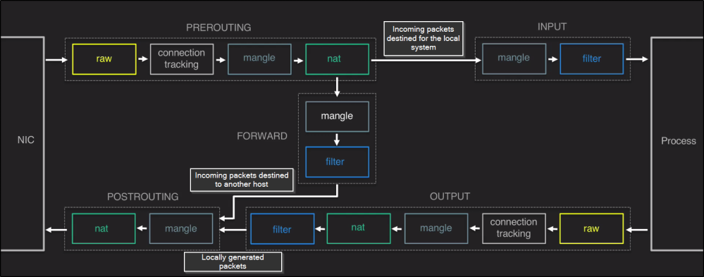

iptables chains
netfilter
hooks
trigger iptables
chains
As a packet triggers a netfilter hook, the associated chains will be processed:
| NETFILTER hooks | trigger | IPTABLES chains |
|---|
| NF_IP_PRE_ROUTING | ----> | PREROUTING |
| NF_IP_LOCAL_IN | ----> | INPUT |
| NF_IP_FORWARD | ----> | FORWARD |
| NF_IP_LOCAL_OUT | ----> | OUTPUT |
| NF_IP_POST_ROUTING | ----> | POSTROUTING |
Chain(PREROUTING, INPUT, OUTPUT..) is formed by a series of
table(filter, nat, mangle...) and each of these table have
rules that contain:
criteria and a
target that is executed if the criteria is matched
image from linuxacademy.com